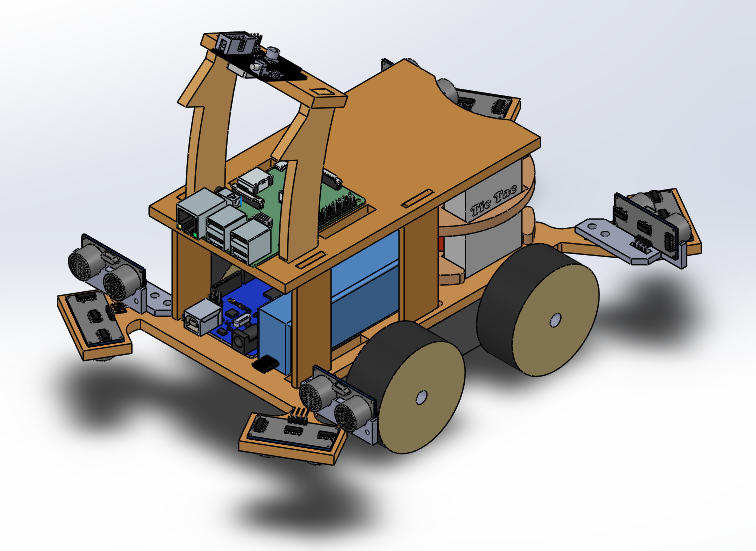
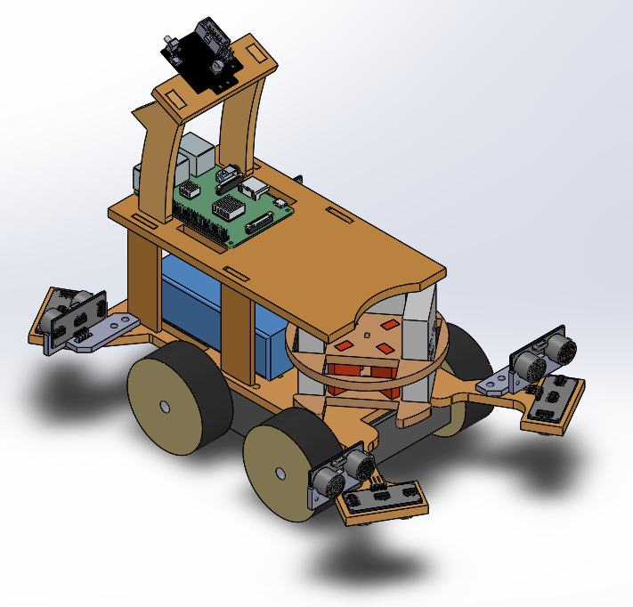

|
SquirtleBot is our final group project for Experimental Robotics (ME129). The robot is designed to:
- Follow a line and stop inside a circle, using a Pixy2 Camera - Avoid cliffs and obstacles, using a suite of ultrasonic sensors - Individually dispense four tic tac boxes, using the rotary dispensor I designed My goals for the dispensor was to make it easy to manufacture, compact, and reliable. I addressed the first point by ensuring it could be made entirely out of MDF on a laser cutter. The longest portion of the manufacturing process was waiting for the wood glue to dry. This was extremely helpful, as I ended up making several prototypes of the dispensor before settling on a final design. I also made it as compact as possible, mostly to fit it between our 100mm wheelbase, allowing us to mount it close to the ground and reducing its impact on CG. Finally, I ensured reliability by only having one moving part and relying on gravity to eject the tic tacs. In addition to designing the rotary dispensor, I manufactured and assembled the entire robot (mostly with a laser cutter and MDF), and managed the power distribution wiring. |
 Front View of CAD  Back View of CAD |